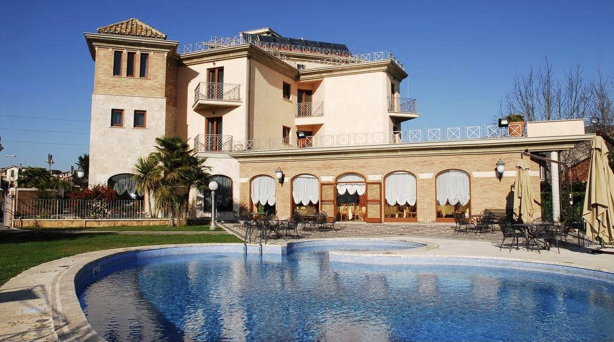
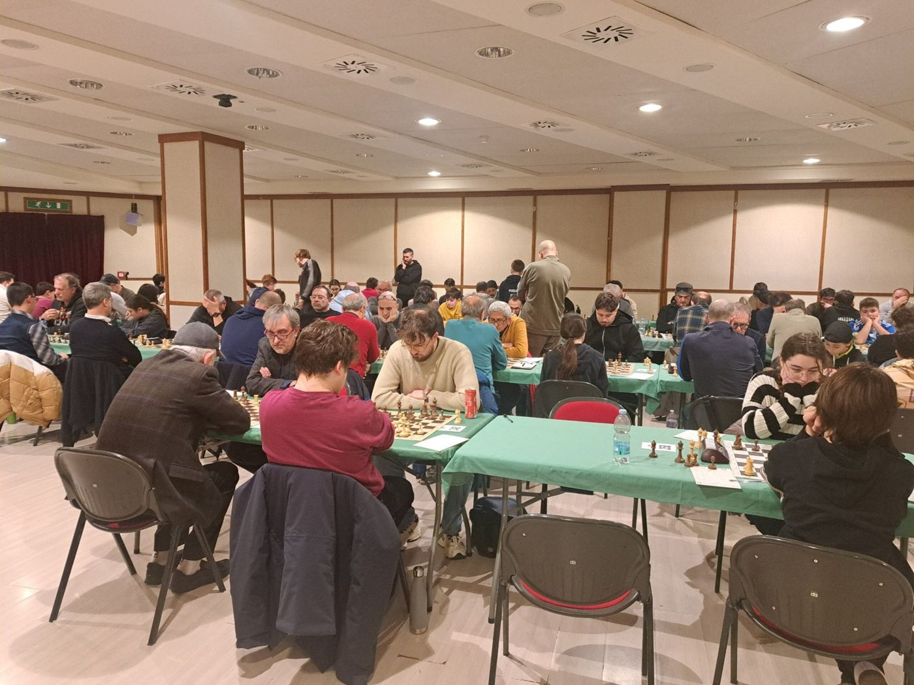
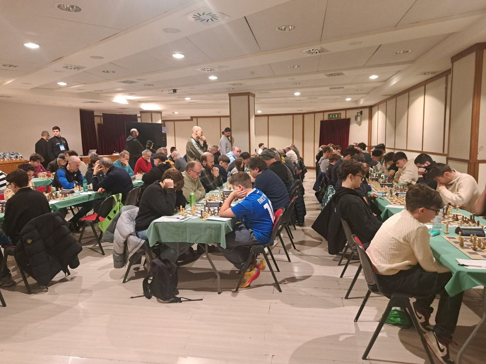
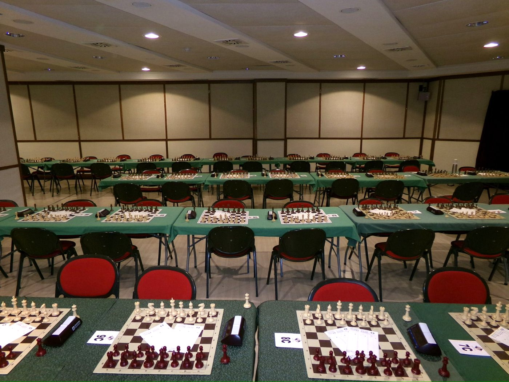
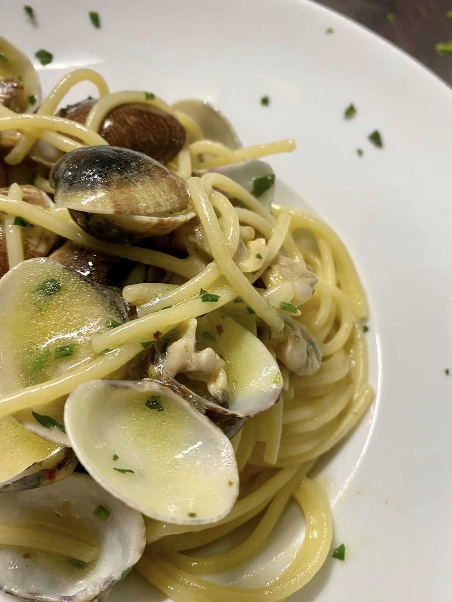
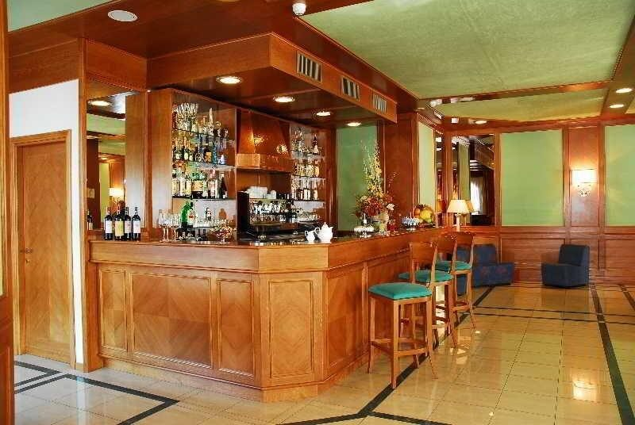

Ospitalità
Il torneo si gioca in albergo: chi vuole può dormire, mangiare e giocare nello stesso posto.

Park Hotel Imperatore Adriano****
Via Giuseppe Garibaldi 167, Guidonia (RM)
342.1970339 / 0774.324844
info@imperatorecongressi.it
parkhotelimperatoreadriano.it
Un albergo a quattro stelle a quattro chilometri da Tivoli e a mezz'ora da Roma, con ambienti ampi e luminosi e un centro congressi che per tre giorni diventa la sala di gioco.
Le camere vanno dalla singola alla suite, che ospita fino a cinque persone: una soluzione comoda per le famiglie e per i gruppi di circolo. Il bar è sempre aperto, il ristorante serve la cena dalle 19.30 alle 22.00, e chi viaggia con un animale è il benvenuto.
Intorno all'albergo c'è un giardino con ulivi secolari e una piscina bordata di travertino, la pietra di Tivoli: a febbraio si guarda soltanto, ma è un buon motivo per tornare d'estate.
Arrivo in camera dalle 14.30, partenza entro le 11.00.



Foto: Park Hotel Imperatore Adriano
La sala di gioco
Si gioca tutti insieme, nella sala congressi dell'albergo.



Foto: A.S.D. Scacchi Valle dell'Aniene, Torneo Città di Tivoli
Convenzione per i giocatori
Solo mezza pensione (HB)
| Camera | A persona |
|---|---|
| Doppia | 70 € |
| Tripla o quadrupla | 55 € |
| Supplemento singola | 30 € |
I prezzi sono a persona e comprendono pernottamento, colazione e cena. La cena comprende un primo, un secondo e un contorno a discrezione dello chef.
Come si prenota
Si prenota direttamente con l'albergo, per telefono al 342.1970339 o allo 0774.324844, oppure scrivendo a info@imperatorecongressi.it.
Importante: quando prenoti specifica che sei un giocatore del torneo, oppure un familiare di un giocatore. Senza questa indicazione la convenzione non viene applicata.
Prenota il prima possibile: nei giorni del torneo le camere sono molto richieste e vanno esaurite in fretta.
Mangiare in albergo
Al Park Hotel si mangia bene, e lo diciamo per esperienza: è la tavola dei nostri tornei. La cucina lavora con ingredienti freschi e spazia dalle specialità del territorio ai piatti più ricercati; la pizzeria ha il forno a legna e la pizza è tra le più apprezzate dai giocatori; al bar, sempre aperto, ci si ritrova per l'aperitivo o per commentare la partita appena finita.



Foto: Park Hotel Imperatore Adriano
Il ristorante sul sito dell'albergo · L'albergo su Instagram · L'albergo su Facebook
I prezzi per i giocatori
| Pranzo a buffet, acqua inclusa | 13,50 € |
| Cena con pizza, fritti e acqua | 15 € |
| Cena con antipasto, primo e contorno | 20 € |
Chi sceglie la mezza pensione ha la cena già compresa nella convenzione.
Come arrivare
In auto da Roma
Autostrada A24 Roma–L'Aquila, uscita Tivoli. Dal casello l'albergo è a cinque minuti; dal centro di Roma servono circa 25 minuti.
In auto dal resto d'Italia
Dall'autostrada A1, sia da nord sia da sud, si prende l'allacciamento con l'A24 in direzione L'Aquila e si esce a Tivoli, la prima uscita.
In treno
La linea regionale FL2 collega Roma Tiburtina con Tivoli. Le stazioni più vicine sono Bagni di Tivoli (in via di rinomina in Tivoli Terme) e Tivoli, entrambe a circa tre chilometri e mezzo in linea d'aria dall'albergo: l'ultimo tratto si fa in taxi o in auto, non a piedi. Orari e biglietti su trenitalia.com.
In autobus da Roma
Gli autobus Cotral per Tivoli partono dal capolinea di Ponte Mammolo, sulla linea B della metropolitana, e percorrono la via Tiburtina. La fermata più vicina è "Via Tiburtina (Pontelucano)", a meno di un chilometro dall'albergo. Il viaggio dura intorno ai tre quarti d'ora, traffico permettendo. Orari su cotralspa.it.
Taxi e trasferimenti
Dalle stazioni e dalla fermata dell'autobus l'albergo si raggiunge in pochi minuti d'auto. Per un taxi o per un trasferimento dall'aeroporto conviene sentire la reception dell'albergo, al numero 0774.324844.
In aereo
Da Fiumicino il treno regionale FL1 porta a Roma Tiburtina, dove si cambia per la FL2. Da Ciampino si raggiunge prima Roma Termini e poi Tiburtina. Chi noleggia un'auto prende il Grande Raccordo Anulare e poi l'A24.
Gli orari di treni e autobus cambiano nel corso dell'anno: controllali sui siti ufficiali qualche giorno prima di partire.
Parcheggi
Parcheggiare non è un problema ed è sempre gratuito. L'albergo ha un parcheggio interno, per auto e moto, collegato direttamente alla hall. Appena fuori c'è un parcheggio esterno molto ampio, libero e senza alcun costo, con posto per tutti anche nei giorni del torneo.